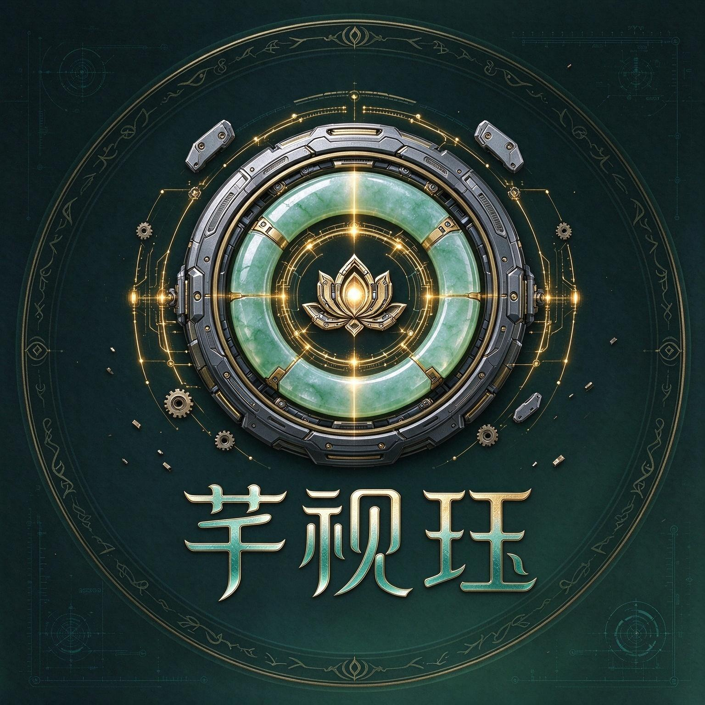
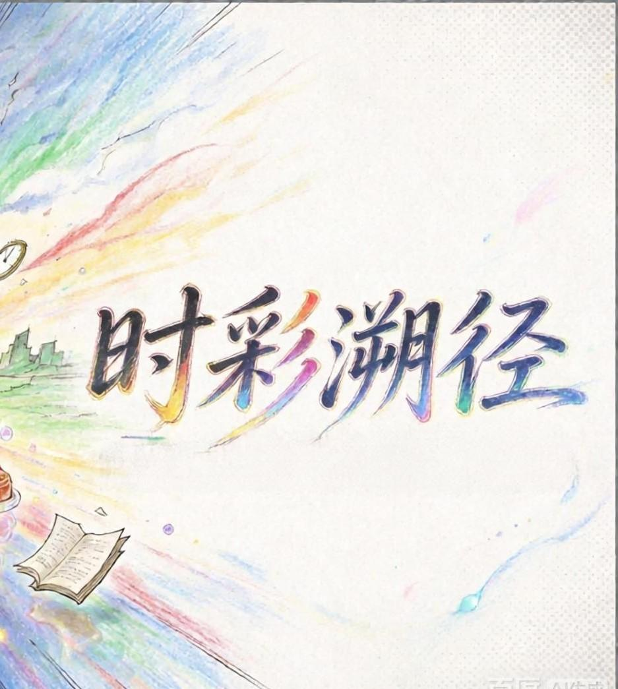

芊视珏
我们是一个轻量小游戏和运用ai软件的小型工作室。
芊是草木生长，代表耐心打磨；视是视野的表达；珏是双玉合拼，代表人与ai的共同结果。
我们在意的什么？小游戏品类很多，寿命很短，我们保持我们的原生态，不做逼氪，不肝不放广告，相信玩家的时间不是廉价的，让每一分钟碎片时间，值得去点开。
现已在taptap中上架《时彩溯径》。
作品展示

《时彩溯径》，时空主题独立跑酷小游戏
前往TapTap查看关于我们
芊视珏工作室专注独立休闲小游戏创作，融合东方美学与机械科幻质感，借助AI辅助创作，坚持无广告、无逼氪的纯粹游玩体验。代表作品《时彩溯径》，是一款时空主题跑酷小游戏。
联系我
欢迎独立游戏交流、合作邀约
你后续可以替换这里，放上你的邮箱、社交账号